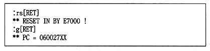
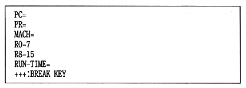

Compile, assemble, and link source files to create a load module in SYSROF format.
Convert to binary module with ROF2BIN.
Create multiple files to be loaded from the memory file as CD-ROM files by repeating 1 and 2.
Use
MFCAT to combine multiple files and create a memory file.
● How to use memory file
The standard procedure from starting
ICE to executing the target program is shown below.
(1) Boot ROM boot
1 Boots the BOOT ROM.

2 When the logo is displayed, press [Ctrl-C].

(2) Load
1 Loads the target program and memory file according to the format of the ICE file read command.
(3) Memory file settings
1 To make the file system library recognize that a memory file is loaded,
Set the start address of the mail. 2 Search the address of [_GFMC_base] from the map file of the target program and store the memory file there
Set the address where you loaded.
(4) Target program execution
1 Execute from the start address of the target program.